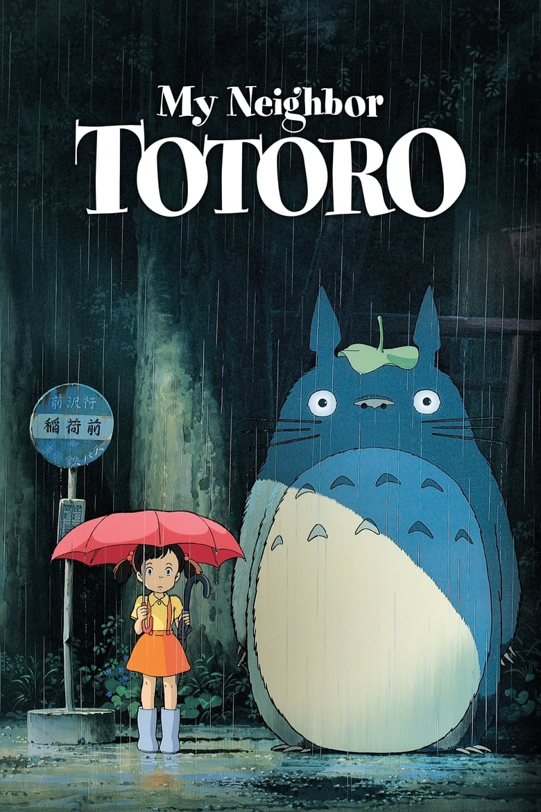
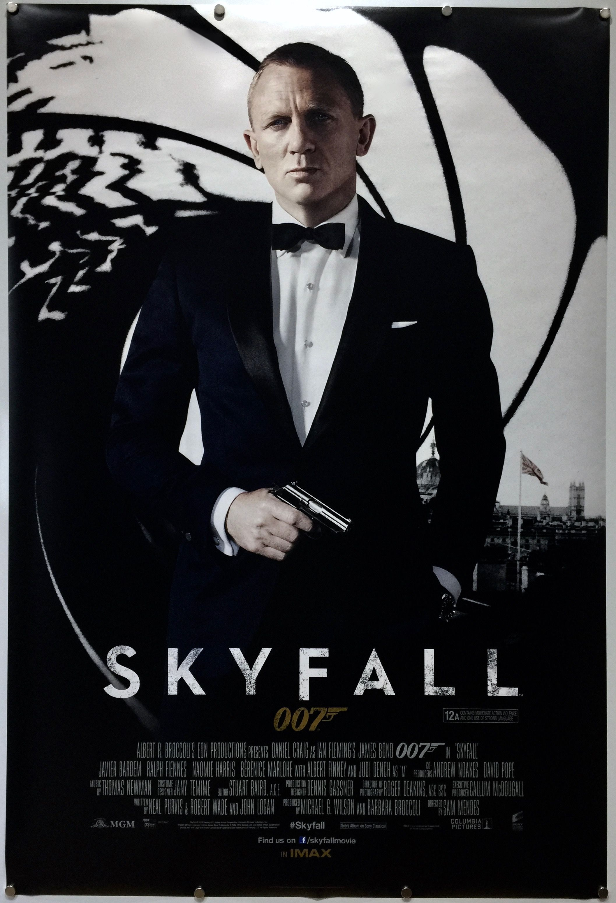
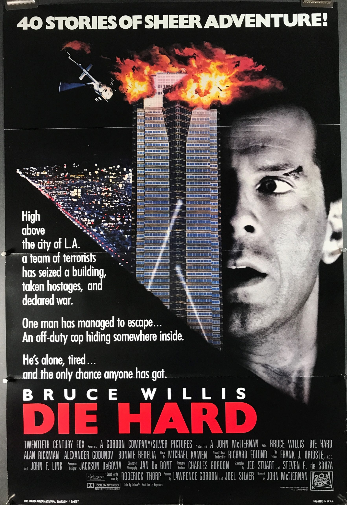
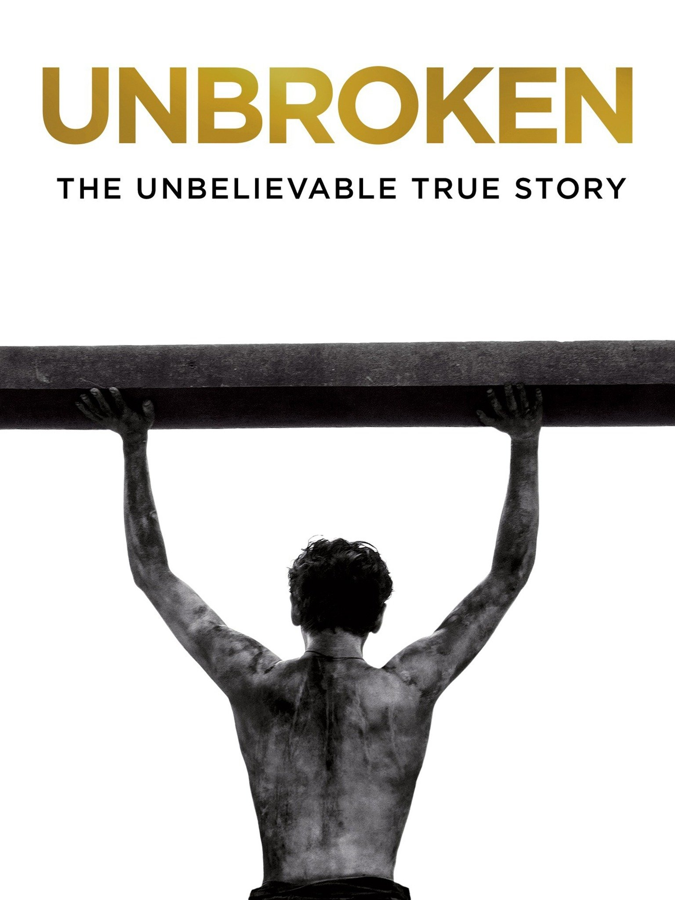
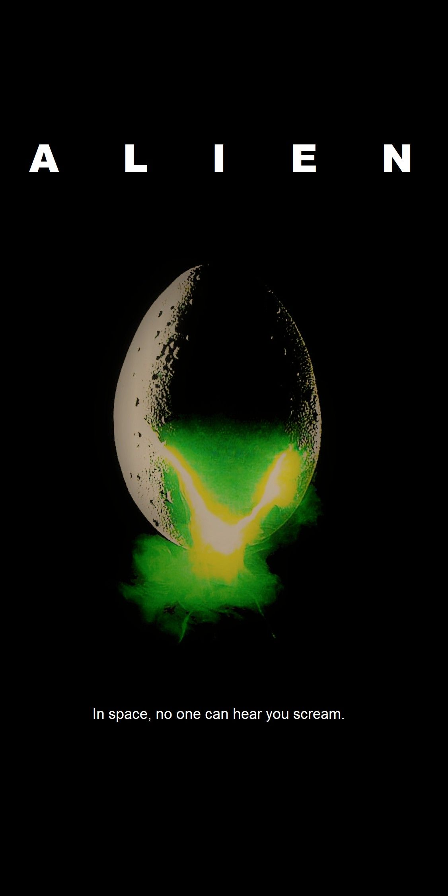
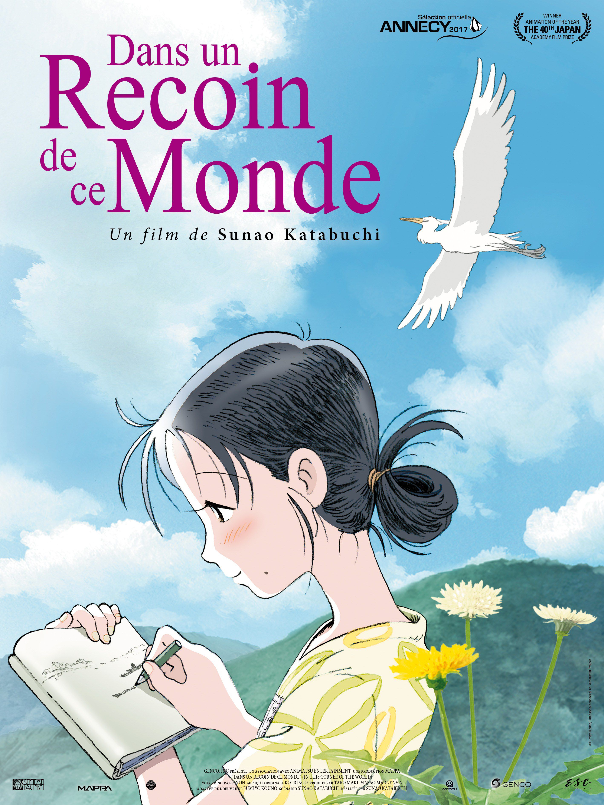
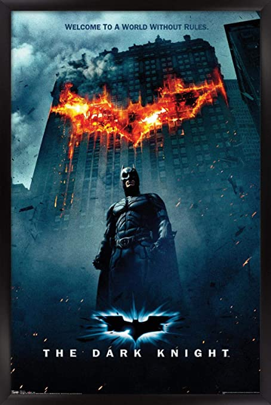
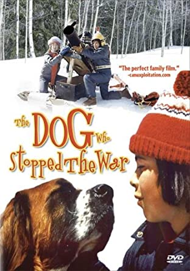

Top 10 movies
After hours of rewatching my favorites from voer the years. Across every genre and culture of movie that I have watched from horror, comedy, action etc. has been assembled here. I am no professional but my goal was to put out some friendly suggetion for a friday movie night with friends of family.
Number 10: My Neighbor Totoro
I have watched this movie easily half a dozen times by now as my sister always enjoyed it. In this colorful work of art that stands the test of time. You find yourself lost in this whimsical world.
Number 9: Skyfall
Out of every James Bond movie I have had the pleasure of watching. Skyfall was always my favorite, from the score and set designs this action-packed movie has something for everyone.
Number 8: Diehard
Die hard as many have called it "a brain-dead movie" is about as fun and intense as a Christmas movie can get... If you can ever consider it one. It was very violent but after watching you can appreciate just why so many people enjoyed it.
Number 7: Unbroken
I am not going to lie, this movie was a tear jerker, from the bleak visuals and gut-wrenching story. You get lost in this powerful movie. I think any person can come to enjoy it, just bring a bag of popcorn and a box of tissues, "or any nearby pet for that matter"
Number 6: Alien
Alien was officially the first horror movie I ever watched. I don’t remember it being too scary because of how world shattering the designs of the Alien are and the actors picked. I recommend it for any fans of classical horror.
Number 5: In This Corner of the World
This movie was a hard one to revisit. This movie is just depressing because of its story. While one may see this as a negative I see the opposite as the best and most colorful moments of the movie leave even more of an impact when stood beside a movie of Japanese romance set during WWII
Number 4: The Dark Knight
I watched this movie not too long ago one winter's day and I immediately regretted not watching it sooner. Its dark story of cycles of hatred and villainy are a powerful message. That mixed with its score by Hans Zimmer make this the best Batman movie of all time.
Number 3: Into the Spider verse

This movie was breath taking every time I watched it. Its visuals and use of art styles found in comic books made this a trend setter and the single best animated movie of the year.
Number 2: The Dog that Stopped the War
to any fans of a wholesome movie about love, loss and coming of age, this movie is for you. The characters are all wonderful and memorable whilst the inclusion of a dog as a main character makes the movie even more entertaining. Just a warning, the ending is a heart breaker.
Number 1: The Book of Life

The book of life is my single favorite movie of all time. The direction of the art that tells such a deep story and adds depth to the animated world was trend setting for its time. Don’t even get me started on the music as that makes this movie easily an 11/10